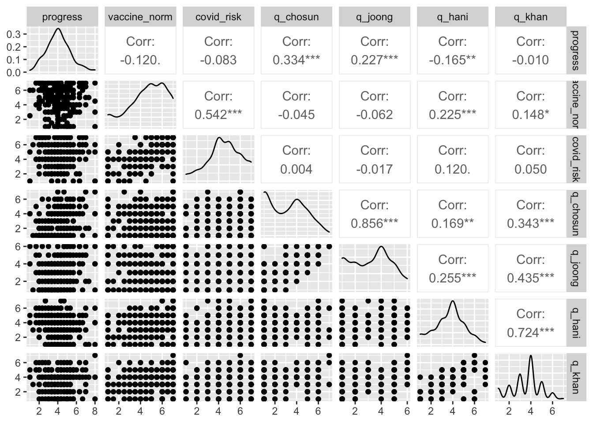

getwd()[1] "/Users/jihwalee/Data/mcq"v.rds p.rds 파일 작업 디렉토리에 복사
getwd()[1] "/Users/jihwalee/Data/mcq"R환경으로 이입
readRDS("v.rds") -> df
dim(df)[1] 263 42str(df)Classes 'tidytable', 'data.table' and 'data.frame': 263 obs. of 42 variables:
$ ID : num 1 3 4 6 7 11 13 14 15 16 ...
$ sex : num 1 2 2 1 1 1 1 1 1 2 ...
$ age : num 42 39 22 59 44 22 25 23 21 24 ...
$ gen : num 2 2 1 3 2 1 1 1 1 1 ...
$ area : num 1 4 1 11 12 15 4 1 8 2 ...
$ occupation : num 6 4 12 7 13 12 13 12 12 8 ...
$ education : num 10 12 8 10 10 8 4 8 8 9 ...
$ class : num 6 6 6 5 3 9 5 6 4 3 ...
$ m_care : num 5.33 5.67 5.67 6.33 5 ...
$ m_fair : num 5.67 6.33 6 6 5 ...
$ m_belong : num 5 4.33 4.67 5.33 4.33 ...
$ m_authority : num 5 4.33 4.67 5.67 4.67 ...
$ m_purity : num 4.67 4.33 4.67 4.33 4.33 ...
$ m_liberty : num 4.67 5 5 5.67 5 ...
$ progress : num 3.67 3.67 3 3 4 ...
$ vaccine_norm : num 5 6 2 7 5 1 1 4.5 1 1 ...
$ covid_risk : num 6 5 4 6 4 5 1 5 3 5 ...
$ pain_covid : num 5 5.5 2 8 8 4 3 5 8 6 ...
$ pain_vaccine : num 1.5 5 3 5.5 5.5 4 5.5 5.5 8 4.5 ...
$ vaccine : num 5 5 4 4 5 5 1 4 1 4 ...
$ humility : num 4.17 4.83 4.75 4.42 4.25 ...
$ h_inde : num 3.33 3.33 5.33 4 3.67 ...
$ h_openness : num 5.67 5.67 5 5.33 5 ...
$ h_respect : num 4.67 5.67 5.67 4.67 4.67 ...
$ h_humility : num 3 4.67 3 3.67 3.67 ...
$ connect : num 6 4.75 5.25 5 3.75 4.25 5.5 4.25 5.75 3.5 ...
$ isolation : num 2.33 3 4.33 3 5 ...
$ illbeing : num 3.25 4.25 2.5 3 4.5 4.75 1 4.25 1 3.75 ...
$ wellbeing : num 3.75 3.75 3.75 2 2.25 3.25 4.5 2.75 5 2.5 ...
$ news_chosun : num 1 2 1 1 1 1 1 6 1 1 ...
$ news_joong : num 3 3 2 1 1 1 1 5 1 1 ...
$ news_hani : num 1 3 1 1 1 1 1 5 7 1 ...
$ news_khan : num 1 3 1 1 1 1 1 6 7 1 ...
$ news_portal : num 9 7 3 4 6 8 6 5 7 1 ...
$ news_user : chr NA "TV" NA "TV" ...
$ news_user_time: num 1 7 1 7 1 1 1 1 1 1 ...
$ q_chosun : num 3 1 4 6 1 2 1 4 1 4 ...
$ q_joong : num 3 3 5 6 1 2 1 4 1 4 ...
$ q_hani : num 2 4 4 6 4 2 1 4 4 4 ...
$ q_khan : num 2 4 4 6 4 2 1 5 4 4 ...
$ q_portal : num 5 4 4 5 4 7 1 4 5 4 ...
$ q_user : num NA 5 NA 6 NA NA NA NA NA NA ...
- attr(*, ".internal.selfref")=<externalptr> names(df) [1] "ID" "sex" "age" "gen"
[5] "area" "occupation" "education" "class"
[9] "m_care" "m_fair" "m_belong" "m_authority"
[13] "m_purity" "m_liberty" "progress" "vaccine_norm"
[17] "covid_risk" "pain_covid" "pain_vaccine" "vaccine"
[21] "humility" "h_inde" "h_openness" "h_respect"
[25] "h_humility" "connect" "isolation" "illbeing"
[29] "wellbeing" "news_chosun" "news_joong" "news_hani"
[33] "news_khan" "news_portal" "news_user" "news_user_time"
[37] "q_chosun" "q_joong" "q_hani" "q_khan"
[41] "q_portal" "q_user" library(tidyverse)── Attaching packages ─────────────────────────────────────── tidyverse 1.3.1 ──✔ ggplot2 3.3.5 ✔ purrr 0.3.4
✔ tibble 3.1.6 ✔ dplyr 1.0.8
✔ tidyr 1.2.0 ✔ stringr 1.4.0
✔ readr 2.1.2 ✔ forcats 0.5.1── Conflicts ────────────────────────────────────────── tidyverse_conflicts() ──
✖ dplyr::filter() masks stats::filter()
✖ dplyr::lag() masks stats::lag()library(tidytable)
Attaching package: 'tidytable'The following object is masked from 'package:stats':
dtdf %>% select.(progress, vaccine_norm, covid_risk, q_chosun, q_joong, q_hani, q_khan) -> df
names(df)[1] "progress" "vaccine_norm" "covid_risk" "q_chosun" "q_joong"
[6] "q_hani" "q_khan" library(skimr) # 기술통계
library(gt) # 기술통계 표 깔끔하게
skim(df)| Name | df |
| Number of rows | 263 |
| Number of columns | 7 |
| Key | NULL |
| _______________________ | |
| Column type frequency: | |
| numeric | 7 |
| ________________________ | |
| Group variables | None |
Variable type: numeric
| skim_variable | n_missing | complete_rate | mean | sd | p0 | p25 | p50 | p75 | p100 | hist |
|---|---|---|---|---|---|---|---|---|---|---|
| progress | 0 | 1 | 4.10 | 1.32 | 1 | 3.33 | 4 | 5 | 8 | ▂▆▇▂▁ |
| vaccine_norm | 0 | 1 | 4.74 | 1.67 | 1 | 4.00 | 5 | 6 | 7 | ▂▂▅▅▇ |
| covid_risk | 0 | 1 | 4.54 | 1.55 | 1 | 4.00 | 5 | 6 | 7 | ▃▃▇▇▇ |
| q_chosun | 0 | 1 | 3.07 | 1.74 | 1 | 1.00 | 3 | 4 | 7 | ▇▂▅▃▂ |
| q_joong | 0 | 1 | 3.21 | 1.55 | 1 | 2.00 | 3 | 4 | 6 | ▇▃▆▃▂ |
| q_hani | 0 | 1 | 3.70 | 1.37 | 1 | 3.00 | 4 | 5 | 7 | ▅▅▇▃▂ |
| q_khan | 0 | 1 | 3.54 | 1.30 | 1 | 3.00 | 4 | 4 | 7 | ▅▅▇▃▁ |
skim(df) %>% gt()| skim_type | skim_variable | n_missing | complete_rate | numeric.mean | numeric.sd | numeric.p0 | numeric.p25 | numeric.p50 | numeric.p75 | numeric.p100 | numeric.hist |
|---|---|---|---|---|---|---|---|---|---|---|---|
| numeric | progress | 0 | 1 | 4.097592 | 1.316763 | 1 | 3.333333 | 4 | 5 | 8 | ▂▆▇▂▁ |
| numeric | vaccine_norm | 0 | 1 | 4.735741 | 1.673074 | 1 | 4.000000 | 5 | 6 | 7 | ▂▂▅▅▇ |
| numeric | covid_risk | 0 | 1 | 4.543726 | 1.547279 | 1 | 4.000000 | 5 | 6 | 7 | ▃▃▇▇▇ |
| numeric | q_chosun | 0 | 1 | 3.072243 | 1.736043 | 1 | 1.000000 | 3 | 4 | 7 | ▇▂▅▃▂ |
| numeric | q_joong | 0 | 1 | 3.212928 | 1.550764 | 1 | 2.000000 | 3 | 4 | 6 | ▇▃▆▃▂ |
| numeric | q_hani | 0 | 1 | 3.695817 | 1.372669 | 1 | 3.000000 | 4 | 5 | 7 | ▅▅▇▃▂ |
| numeric | q_khan | 0 | 1 | 3.543726 | 1.303617 | 1 | 3.000000 | 4 | 4 | 7 | ▅▅▇▃▁ |
library(GGally)Registered S3 method overwritten by 'GGally':
method from
+.gg ggplot2ggpairs(df)
분석할 변수로 1. 주관적 진보성향(progress) 2. 주관적 백신규범(vaccine_norm) 3. 코로나 위험지각(covid_risk), 4. 주관적 뉴스품질평가(뉴스품질지각, q_)를 선택했다. (뉴스품질지각은 조선, 중앙(보수지), 한겨레, 경향(진보지)만 포함)
가설 1: 주관적 진보성향이 높을수록(보수적) 주관적 백신규범 수준이 높을 것이다.
가설 2: 코로나 위험지각 수준이 높을수록 주관적 백신규범 수준이 높을 것이다.
가설 3: 주관적 진보성향이 높은 사람(보수적)은 보수지(조선, 중앙)의 뉴스품질을 높게 평가하고 진보지(한겨레, 경향)의 뉴스품질을 낮게 평가할 것이다.
가설 1 결과: 주관적 진보성향과 주관적 백신규범 사이에는 통계적으로 유의한 상관성이 관측되지 않았다(r = -0.120, p>0.5). 가설1은 지지되지 않았다.
가설 2 결과: 코로나 위험지각과 주관적 백신규범 사이에는 통계적으로 유의한 상관성이 관측되었다(r=0.542, p<0.001). 가설2는 지지되었다.
가설 3 결과: 주관적 진보성향과 주관적 뉴스품질평가 사이에서는 주관적 진보성향과 조선일보 평가(r=0.334, p<0.001), 중앙일보(r=0.227, p<0.001), 한겨례(r=-0.165, p<0.01)사이에서 통계적으로 유의한 상관성이 관측되었다. 경향신문(r=-0.010, p>0.5)은 통계적으로 유의한 상관성이 관측되지 않았다. 즉, 주관적 진보성향이 높을수록(보수적일수록) 조선일보와 중앙일보의 품질을 높게 평가하며 한겨레는 낮게 평가한다고 해석할 수 있다.